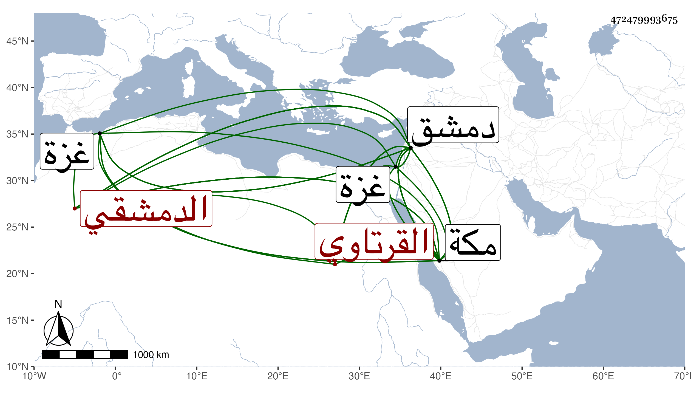

0902Sakhawi.DawLamic.ITO20230111-ara1.EIS1600.472479993675
Biography ID: 472479993675
118
عبد الله ويقال له عبيد الله بن علي بن إبراهيم بن علي الليثي القرتاوي ثم الدمشقي نزيل مكة ويعرف بالسروجي حرفة له بدمشق . ولد قبيل سنة ثمان وأربعين بقرتيا من أعمال غزة ونشأ بها فقرأ النصف من القرآن ثم تحول لدمشق فنزل بزاوية أحمد الفقاعي ثم انتقل لجامع منجك فأكمل به القرآن عند البرهان بن القدسي وأخيه عبد الرزاق وكذا قرأ الغاية وجود عليهما وعلى غيرهما القرآن بل تلاه لنافع وابن كثير وأبي عمرو على محمد الحصني البصروي الضرير نزيل دمشق وغيره وقرأ في الفقه على الشمس الصفدي وفي النحو على الشمس الحنفي شيخ القجماسية بدمشق وخطيب جامع تنكز وغيره ، وقدم مكة في سنة خمس وتسعين وأقرأ في بيت جواهر الشمسي بن الزمن ولازمني حتى قرأ البخاري وسمع غيره بل قرأ في البحث من أول الألفية إلى الشاذ وسمع في البحث كثيرا في شرحي على تقريب النووي وفي الرواية جميع سيرة ابن هشام ومجالس من أول التذكرة للقرطبي ومن لفظي في محل المولد النبوي مصنفي الفخر العلوي والمسلسل بالأولية وبسورة الصف وجملة وهو فقير له إحساس محب في المسائل والعلم وربما قرأ على الدلجي في الأصل وغيره وله اهتمام بالقراءات والشاطبية وسافر من مكة لشدة غلائها في ربيع الثاني سنة سبع وتسعين كتب الله سلامته .
